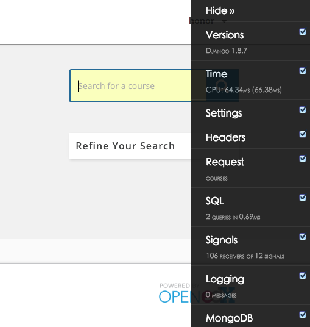
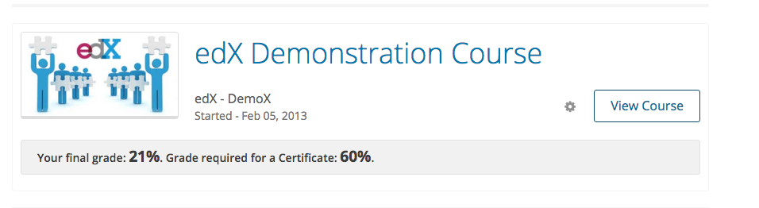
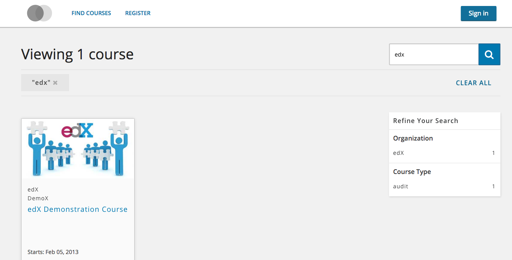
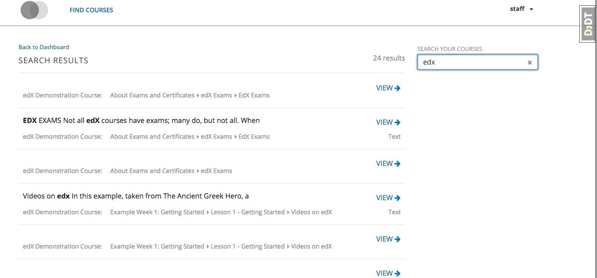
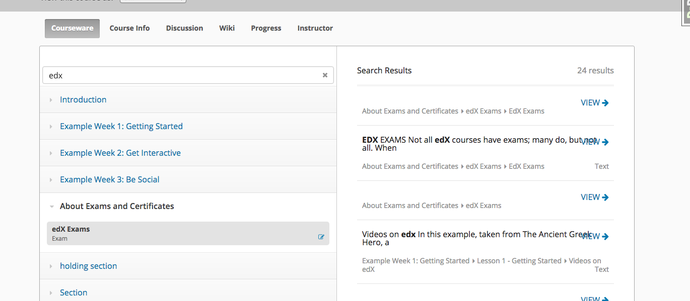
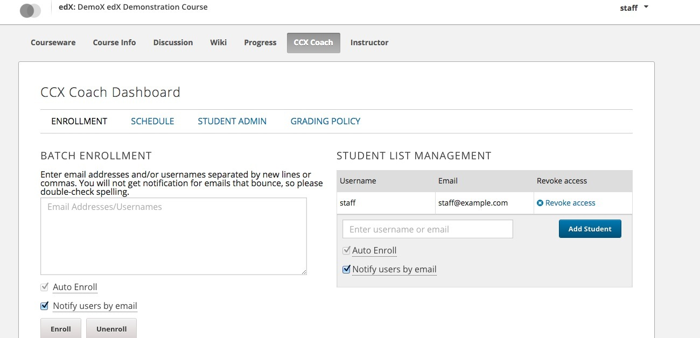

前言
如果不出意外1月中旬，Open edX第四个稳定版Dogwood将发布，这个版本有许多吸引人的新特性，我们这边预计准备升级到这个稳定版，所以在正式发布之前，先踩踩坑，看看新特性
安装
安装过程和此前并没太大差别
图方便的话，使用一步安装就行：wget https://raw.githubusercontent.com/edx/configuration/master/util/install/sandbox.sh -O - | bash
你当然也可以分步安装，参考edX Ubuntu 12.04 64 bit Installation
不过你必须保证国际网络通畅，即便如此你也很可能会出错，下面给出了我遇到的错误以及错误处理
问题处理
由于pip的升级，可能会遇到一些奇怪的问题，一般而言google一下都能解决的
mysql_config not found- 解决方案：
sudo apt-get install libmysqlclient-dev pkg_resources.DistributionNotFound: paramiko- 解决方案：
sudo pip install -U setuptools
探索
已有服务
sudo /edx/bin/supervisorctl status
analytics_api RUNNING pid 1594, uptime 3:45:20
certs RUNNING pid 2219, uptime 3:45:07
edx_notes_api RUNNING pid 1597, uptime 3:45:20
edxapp:cms RUNNING pid 6254, uptime 3:34:37
edxapp:lms RUNNING pid 6253, uptime 3:34:37
edxapp_worker:cms_default_4 RUNNING pid 1678, uptime 3:45:19
edxapp_worker:cms_high_1 RUNNING pid 1656, uptime 3:45:20
edxapp_worker:cms_low_3 RUNNING pid 1635, uptime 3:45:20
edxapp_worker:lms_default_3 RUNNING pid 1650, uptime 3:45:20
edxapp_worker:lms_high_4 RUNNING pid 1684, uptime 3:45:19
edxapp_worker:lms_high_mem_2 RUNNING pid 1642, uptime 3:45:20
edxapp_worker:lms_low_1 RUNNING pid 1665, uptime 3:45:19
forum RUNNING pid 1591, uptime 3:45:20
insights RUNNING pid 1690, uptime 3:45:19
notifier-celery-workers RUNNING pid 1593, uptime 3:45:20
notifier-scheduler RUNNING pid 1600, uptime 3:45:20
xqueue RUNNING pid 1605, uptime 3:45:20
xqueue_consumer RUNNING pid 1589, uptime 3:45:20
可以看到服务以及很完备了，当然和cypress区别不大,数据分析这块依然没有默认
基础组件
Django以及升级到1.8.7,这意味着migrate以及不依赖south了！

默认使用https
其中安装完成后明显的一项是nginx的配置发生了变化，强制使用https，所以默认情况下无法访问，简易的做法是注释/edx/app/nginx/sites-available里的cms和lms
#if ($scheme != "https") {
#rewrite ^ https://$host$uri permanent;
#}
重启nginx即可:service nginx restart
证书

- 进入Studio >
Advanced Settings>Certificates Display Behavior,填入early_with_info Advanced Settings>Certificate Web/HTML View Enabled, 填入true- 进入后台为这门课生成证书:
sudo -u www-data /edx/bin/python.edxapp /edx/app/edxapp/edx-platform/manage.py lms --settings aws ungenerated_certs -c course-v1:edX+DemoX+Demo_Course --insecure
搜索功能
  
edx中的搜索功能及其强大，对于找知识点十分方便，可以搜索课程内部的各类数据，既可以针对某门课程进修内部资料搜索，也可以针对学生的所有选修课程，进行综合搜索
使用场景参考这里Searching the Course
- 安装edx-search:
pip install -e git+https://github.com/edx/edx-search.git@release-2015-11-17#egg=edx-search - 启用特性： 在*.env.json中FEATURES里加上
"ENABLE_COURSEWARE_INDEX": true,和"ENABLE_LIBRARY_INDEX": true,,如果加上"ENABLE_COURSE_DISCOVERY": true,那么首页的搜索功能也将被开启 - 在Studio里， 点击
Reindex， 索引完成即可搜索，搜索基于elasticsearch - 在devstack中默认搜索功能，如果需要在生产环境里使用，可以参考devstack.py
Enabling Custom Courses

- 在*.env.json里添加
"CUSTOM_COURSES_EDX": true, - restart edxapp:
- 进入Studio >
Advanced Settings>Enable CCX设置为true - 在lms >
Instructor>COURSE TEAM MANAGEMENT选中CCX Coaches，添加用户即可 - migrate同步数据：
sudo -u www-data /edx/bin/python.edxapp /edx/app/edxapp/edx-platform/manage.py lms migrate --settings aws
之后在tab上就会出现CCX Coaches
Timed Exams
在Advanced Settings里启用即可
更多细节参考: Timed Exams
Using Open edX as an LTI Tool Provider
这是最令人兴奋的一块了， Open edX可以作为LTI Tool Provider, 如果你一直在关注这块，可以放手开始构建你想构建的体系啦.今天就暂时不写这块的细节了
参考：